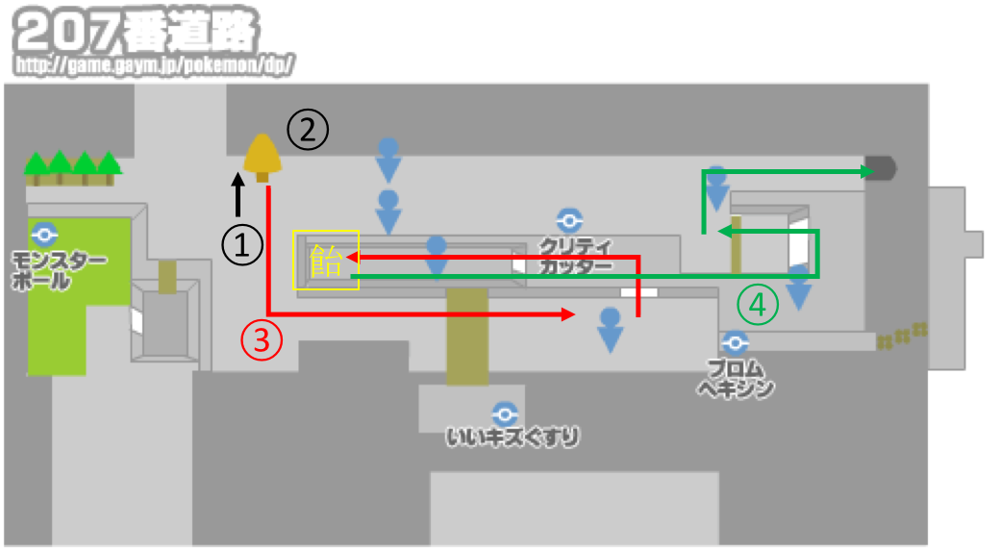

サブロム用チャート解説

はじめに
・ DSの時間は 「18時45分」にする。
・ 博士の話が始まる。基本B連打。最初の質問は「だいじょうぶ！」を選択、トレーナー名は適当な「2文字」が理想。ライバルはデフォルトのものから短めのものを選ぶ。
フタバタウン
・ 自分の部屋で「せってい」を開き「はなしのはやさ はやい」「せんとうアニメ みない」「かちぬき」に変更。
・ ライバルの家(左上)に向かう。ライバル家の二階に上がってライバルを見送った後、街の北側へ。
201番道路
・ 道なりに西へ進む。
シンジ湖
・ イベント。一回目は「ナエトル(左端)」二回目は「ポッチャマ(右端)」三回目は「ヒコザル(真ん中)」を選ぶ。
・ いずれの場合も戦闘はこうげき(ひっかく はたく たいあたり)連打。
・ 戦闘後フタバタウンに戻る。
フタバタウン
・ 母からランニングシューズをもらう。これ以降「トレーナーを避ける場合」を除き原則としてBダッシュ前提で移動する。自転車は乗っててOK。
201番道路
・ 草むらも走り抜けていい。道なりに東に進みマサゴタウンへ。
マサゴタウン
・ 博士との話はA連打。「ヒコザル」をもらった場合のみ1文字のニックネームをつける。
・ ポケモン図鑑受け取る。その後ヒカリ(コウキ)の誘導でショップ前に移動。
[1,2回目]
・ モンスターボール 3個 キズぐすり 2個 購入
・ ボール購入後、今来た道(201番道路)に向かいポケモン(なんでもいい)を1匹捕獲。キズぐすりをナエトル(ポッチャマ)に持たせる。
・ その後、マサゴタウンのPC二階、左から2番目のお姉さんに話しかけてユニオンルームへ入る。
・ メインに輸送後、電源切ってデータリセット(タイトル画面で↑ + B + select)。
[3回目]
・ モンスターボール 3個 キズぐすり 8個 購入
・ フタバタウンの母に話をしに行き、その後マサゴタウンを通り抜けて202番道路へ。
201番道路〜202番道路
・ 捕獲チュートリアルを見る。ここでチュートリアルは遅い感。
・ 道中「ムックル」「ビッパ」が出たら一回攻撃してからモンスターボールで捕獲する(両方ほしい)。
◇ たんぱん
・ムックル(60) ひっかく連打(適宜回復)
◇ ミニスカ
・ビッパ(36) ひっかく連打
・ビッパ(36) ひっかく＋ひのこ(ひのこを先にすると火傷でタイムロスする恐れがある)
◇ たんぱん
・コリンク(63) ひのこ2
コトブキシティ
・トレーナーズスクール(PCの左隣の建物)に入りライバルに「おとどけもの」を渡す。
・スクール内右側のトレーナー2人と戦う(右の子から先に倒す)
◇ じゅくがえり達
・ケーシィ2匹(192) ひっかく連打
・「技マシン10」をヒコザルにつかう(ちょうはつ消す)
・スクール出て、上に進むとポケッチカンパニーのイベント。ピエロの質問は全て「はい」で答えればOK。ポケッチもらったら右へ。
203番道路
◆ ライバル
・ムックル(84) めざパ→ひのこ
・ポッチャマ(126) めざパ→ひっかくorめざパ連打
ここで、ムックルとポッチャマに"どれくらいめざパが効いたか"＆"弱点(半減)だったかどうか"を要チェック．
(1)抜群ー抜群 ： でんき
(2)抜群ー等倍 ： いわ
(3)抜群ー半減 ： こおり
(4)等倍ー等倍 ： エスパー、ひこう、かくとう、ドラゴン、あく、どく
(5)等倍ー半減 ： はがね、みず、ほのお
(6)半減ー抜群 ： くさ
(7)半減ー等倍 ： むし
(8)無効ー等倍 ： じめん、ゴースト
☆ 等倍でムックルに半分近くは入らないと威力的にはほぼ使えない。
・ 野生が出たら倒す．
◇ 短パン(階段の上)
・コロボーシ(81) ひのこ
◇ ミニスカ(さらに階段の上)
・ビッパ(49) ひのこ
・ムックル(48) ひのこ(めざパでもいい)
・スボミー(57) ひのこ
◇ 短パン
・ワンリキー(112) ひのこ 2
◇ ミニスカ
・ムックル(60) ひのこ(残ったらひっかく)
・ビッパ(61) ひのこ(残ったらひっかく)
クロガネゲート
・ いわくだきもらう
◇ ボーイスカウト
・コリンク(90) ひっかく＋ひのこ
◇ ガールスカウト
・スボミー(72) ひのこ
・コダック(85) ひっかく連打
クロガネシティ
・ ジム前に移動，ライバルと話す．
・ 街の右下，クロガネ炭鉱へ移動．
クロガネ炭鉱
・ 入ってすぐ「ディフェンダー」回収。
◇ さぎょういん
・ワンリキー(144) ひのこ連打
・ ここでモウカザルに進化(マッハパンチ→ひっかく消す)。もししなければその辺の野生を倒す。
・ 「キズぐすり」回収。
・ ヒョウタと話す→左奥に落ちてるあなぬけのヒモを使って脱出
クロガネジム
◆ ヒョウタ
・イシツブテ(220) マッハ 2
・イワーク(277) にらみ→マッハ 2
☆イワークに「いやなおと」されてたら一回控えを生贄にしてからズガイドスは倒す
・ズガイドス(297) にらみ→マッハ
クロガネシティ
・ ショップ
・売る：技マシン76
・買う：虫除けスプレー11(右の店員) ネットボール1(左の店員)
☆ お金足りなければモンスターボール売る。
・ 左に進んでクロガネゲートを抜ける。クロガネゲート入ったらスプレー使う。同時にビッパにいわくだき教える。
203番道路
・ トレーナー避けつつ進むだけ。
コトブキシティ
◇ ギンガ
・ズバット(103) ひのこ
・ケムッソ(103) ひのこ
204番道路
◇ ミニスカ(一応避けられる)
・ビッパ(87) マッハ
・ 草むらは一番右の壁に沿って進み、あれたぬけみちへ。
あれたぬけみち
・ 左上に進み「技マシン39(がんせきふうじ)」回収。モウカザルに使う(にらみつけるを消す)。どくけし回収。
※ めざパがズバットに抜群(でんきこおりいわエスパー)だった場合は回収不要。
・ 右に進み洞窟を脱出。
204番道路
・ アロマのおねえさんも避ける。見つかったらひのこ連打で倒す。ねむけざまし拾う。
ソノオタウン
・ ついたらまず右に進み道路で女の子の話を聞く。モモンのみ(右)回収。その後ソノオタウンに戻り、街の左上(ソノオのはなばたけ)へと進む。
ソノオのはなばたけ
◇ ギンガ
・ケムッソ(103) ひのこ
・カラサリス(138) ひのこ
◇ ギンガ
・ズバット(126) がんせきふうじ
☆戦闘後おじさんから「あまいミツ」を9個購入(合計10個になる)。戦った場所から右奥に進んだ先にある木にミツを塗る。
ソノオタウン
・ クラボのみを回収(街中央付近、花屋さんの右に生えてる)
・ PC左の民家の女の子から技マシン88をもらう。
・ 右にそのまま進み、たにまの発電所へ。
205番道路→たにまの発電所(外)
・ 発電所前の木にミツを塗る。
◇ ギンガ
・ニャルマー(166) マッハ
・ キズぐすり拾う。
たにまの発電所(中)
・したっぱは全部避けられる
◆ マーズ
・ズバット(162) がんせきふうじ(めざパ)
・ブニャット(627) マッハ連打
・ イベント後、205番道路に戻って上に進む。
205番道路
・ 橋渡ったところの木にミツを塗る。
・ スプレー使う。バッグのクラボのみをモウカザルに持たせる。
☆ ここのトレーナーは非常に避けにくいので注意。落ちてるアイテムの回収は一切不要。
ハクタイのもり
・ スプレー使いながら進む。
◇ 虫取り＋ミニスカ(強敵・レポート推奨。)
・1ターン目：ケムッソ(103) ひのこ
・2ターン目：アゲハント(448) ひのこ
・3ターン目：カラサリス(169) ひのこ
☆ かえんぐるま覚える。めざパ(がんせきふうじ使ってない場合はにらみつける)消す。
・4ターン目：パチリス(360) かえんぐるま + マッハ
◇ サイキッカー＋サイキッカー
・ケーシィ2匹(480) かえんぐるま連打
・ 草むらを通って森を抜ける。
205番道路
・ 橋渡った先の木にミツを塗る。
・ モモンのみとクラボのみ(左側半分)を回収。もしパチリス戦でクラボのみを消費してたら回収してモウカザルに持たせる。
ハクタイジム
◇ ミニスカ
・チェリンボ(217) ひのこ
・ロゼリア(487) かえんぐるま
◇ アロマ
・スボミー(204) ひのこ
・スボミー(189) ひのこ
・スボミー(218) かえんぐるま
◇ アロマ
・ナエトル(233) かえんぐるま
◇ おとな
・ロゼリア(553) かえんぐるま
◆ ナタネ
・チェリンボ(276) かえんぐるま
・ナエトル(260) かえんぐるま
・ロズレイド(961) かえんぐるま(残るかも)
ハクタイシティ
・ PC右の家の老人に話しかけてたんけんセットをもらう。誘いは「いいえ」で断る。
・ 街の上側のビルに向かう。途中でいあいぎりをもらうので、ビッパに教える。
・ くさむすびをモウカザルに教える(ひのこを消す。技構成は かえんぐるま くさむすび マッハパンチ めざパorがんせきふうじ になる。)
・ ビルの奥の木を切ったさきの「技マシン46」を回収。
ギンガハクタイビル
◇ ギンガ(階段手前にいる奴。一人ずつ戦う。)
・ズバット(162) がんせきふうじ(orめざパ)
・ニャルマー(213) マッハ
◇ ギンガ(階段手前にいる奴。一人ずつ戦う。)
・ケムッソ(150) かえんぐるま
・マユルド(199) かえんぐるま
◇ ギンガ
・ケムッソ(138) かえんぐるま
・カラサリス(184) かえんぐるま
・ズバット(138) かえんぐるま
◇ 研究員
・ユンゲラー(465) かえんぐるま(残ったらくさむすび)
◆ ジュピター
・ズバット(207) がんせきふうじ(めざパ)
・スカタンク(895) かえんぐるま連打(強敵。えんまくされすぎたら交代。)
ハクタイシティ
・ 漢方薬屋(ビル前の道を右に進んだ先)に寄る。
・ 買う： ちからのねっこ 5個 ばんのうこな 2個 ちからのこな(買えるだけ)
・ 自転車屋で自転車もらう。バッグから自転車をYボタンに登録
・ 街の下側に進む。
206番道路(サイクリングロード)
☆ 全トレーナー避ける。最初は左端の岸壁から3マスのところからスタート。ルート覚える。
・ サイクリングロード突破したら右側のいあいぎりした先にある木にミツを塗る。スプレー使うこと。
・ ミツ塗ったら下に進む。

207番道路
ここはやることが多いので図を使って説明する。
・ ヒカリ(コウキ)からダウジングアプリとバトルサーチャーもらう。
① その近く(右下)にげんきのかけらが落ちてる。ダウジング使って回収する。
② 木にミツを塗る。
③ 右側に進むが、下側のルートを進む。たんぱん小僧を避け、やまおとこの先に見えない「ふしぎなアメ」があるので回収。
・ やまおとこに見つかったらイシツブテはくさむすび、ズバットはがんせきふうじ(めざパ)。
④ バトルガール、もうひとりのやまおとこに見つからないようにテンガンざんへ入る。

テンガンざん
・ スプレー使う。アカギと話をする。
・ 中央付近の石に見えないピーピーエイドがあるので回収。
・ 右に進んで抜ける。
208番道路
・ まっすぐ進む。二連続やまおとこを避ける。
・ 階段降りたら右に進み、アロマなおねえさん、げいじゅつかと戦う。
◇ アロマ(704円)
・ミツハニー(216) かえんぐるま
・ロゼリア(586) かえんぐるま
◇ げいじゅつか(960円)
・ウソハチ(247) くさむすび
・マネネ(284) かえんぐるま
・ 道路の下側にある木にミツを塗る。からておうっぽい人はトレーナーじゃない。
・ 右に進んでヨスガシティへ。
ヨスガシティ
・ 街の上側に進んでコンテスト会場前のメリッサに話しかける。中に入る。
・ イベント後、街の下側に進むが、PCで回復することを推奨。
◆ ライバル(2100円)
・ムックル(228) かえんぐるま
・ポッタイシ(643) くさむすび連打
・ポニータ(651) マッハ連打(なきごえ結構入ってたら交代。また、残りの手持ちを全て倒してもらう。)
・ロゼリア(651) かえんぐるま
☆ 戦闘終了後、手持ちで生きてるポケモンが猿1匹になるようにする。
・ 右下にある街の出口付近でピンプクのタマゴをもらう。
209番道路
・ 最初のブリーダーは上の草むらを通って避ける(スプレー使う)
・ つりびとから「いいつりざお」もらう。
・ 橋を渡った先、双子ちゃんの下側の橋を渡り、「ヨクアタール」回収。手持ち1匹なら双子ちゃんとバトルにならない。
・ 双子ちゃんの右側にげんきのかけらが落ちてる。ダウジングして回収。木にミツを塗る。
げんきのかけらの場所
・ 道路に沿って進み、ロストタワーに向かう。草むらを通ってトレーナーは全回避。
ロストタワー
・ スプレー使う。2階でたんぱん小僧と戦って「まんまるいし」回収。
◇ たんぱん(256円)
・スカンプー(270) かえんぐるま
・コロトック(545) かえんぐるま
・カラナクシ(250) マッハ連打
◇ スキンヘッド(456円)
・ピィ(150) マッハ
・ げんきのかけら回収。
◇ だいすきクラブ(1152円)
・ピチュー(135) がんせきふうじorめざパorかえんぐるま
・ピカチュウ(316) かえんぐるま
・ピチュー(135) がんせきふうじorめざパorかえんぐるま
・ 最上階で左のおばあさんからかいりき回収。
・ トレーナー避けつつタワー出る。
209番道路
・ ロストタワー出てすぐのいあいぎりした先の技マシン47を回収。
・ カウガールの後ろを通って左上に行った先、自転車で登れる坂の上にリゾチウムがあるので拾う。
・ くさむらでビーダルをネットボールで捕獲する(必須)。かえんぐるまで削る。
ズイタウン
・ キーのみ回収(一番左)、猿に持たせる。手持ちがボロボロのはずなので回復推奨。
・ ショップ
・ 売る： 技マシン88、技マシン47 ※リゾチウムは売らない。
・ 買う： ダークボール 5個 あなぬけのヒモ 1個 むしよけスプレー 2
・ 街の右側に進んでズイのいせきへ。
ズイのいせき
・ 一回アンノーンに出会ってからスプレー使う。
・ 右上、左下、右上、左上、左上、右下の順。途中のいせきマニアに注意。
・ 最深部のアイテムを回収(左下だけはいらない)し、あなぬけのヒモで脱出。
・ 街の上に進む。
210番道路
・ 最初の草むらにいる牧場おじさんと戦う。牧場おじさんってなんだろう。
◇ 牧場おじさん(680円)
・エイパム(362) マッハ
・コダック(325) くさむすび
・キリンリキ(542) かえんぐるま(残ったらマッハ)
・ まっすぐ進むと見つかるので途中で右の草むらに避ける。木にミツを塗る。
・ 右側に進んで215番道路へ。
この辺で第1タームが終われば上出来。
215番道路
・ 歩道橋？渡った先の木にミツを塗る。
◇ いせきマニア(1104円)
・ドーミラー(324) かえんぐるま連打
・タテトプス(487) マッハ
・ 道の真ん中にあるピーピーエイダーを回収。
◇ エリート(上 1380円)
・ニャルマー(349) マッハ
・ユンゲラー(714) かえんぐるま連打
◆ エリート(下・超強敵 1380円)
・モウカザル(699) マッハ連打
・ギャラドス(1054) くさむすび連打
・ ウイのみ回収。

トバリシティ
① ポイントアップ回収
② デパートで買い物
[3F(下のカウンター)]
・売る：きんのたま、あやしいおこう、ポイントアップ
・買う：技マシン38(だいもんじ)
[3F(上のカウンター)]
・買う：技マシン54(みねうち)、技マシン83(しぜんのめぐみ)
[2F(上のカウンター)]
・買う：スピーダー 4、プラスパワー 3、スペシャルアップ 7、ディフェンダー 1
[1F(左のカウンター)]
・買う：シルバースプレー 3
[1F(右のカウンター)]
・買う：げんきのかけら 1,2個(消費or回収ミスして今3個なければ) ・ PCで回復
③ ジム

トバリジム
・ だいもんじを猿に教える(がんせきふうじorめざパ消す。残るのは「かえんぐるま」「だいもんじ」「くさむすび」「マッハパンチ」)
・ からておう4人のうち右の1人だけ戦う。他のからておうは原則として避ける。適宜バッグで回復。
◇ からておう(右・必須)
・アサナン(546) だいもんじ
参考動画
以下 不要トレーナー
◇ からておう(手前・不要)・ゴーリキー(813) かえんぐるま 2~3
・アサナン(507) だいもんじ
◇ からておう(左・不要)
・ゴーリキー(782) かえんぐるま 2~3
・ワンリキー(401) かえんぐるま 1~2
・ゴーリキー(782) かえんぐるま 2~3
◇ からておう(奥・不要)
☆ ゴーリキーだらけで本当にきついので絶対避ける。
・ゴーリキー3匹 (782*3) かえんぐるま連打
◆ スモモ(3600円 +ジムトレーナー約1900円)
・アサナン(526) プラスパワー1 スピーダー1 かえんぐるま
・ルカリオ(1311) かえんぐるま
・ゴーリキー(844) かえんぐるま 2
トバリシティ
・ ヒカリ(コウキ)の頼みを聞いて倉庫前のギンガだんと戦う。その前にPCで回復すること。
◇ ギンガ(2000円)
・1ターン目 ドクケイル かえんぐるま
・2ターン目 アゲハント かえんぐるま
・3ターン目以降 グレッグル・スカンプー 適当にかえんぐるま
・ 倉庫内のそらをとぶを回収。ムックルに教える。
・ ハクタイシティに飛ぶ
ハクタイシティ
・ サイクリングロード側のゲートにいる研究員から「がくしゅうそうち」をもらう。
・ トバリシティに向かう。
トバリシティ
・ 街の下(214番道路)に進む
214番道路
・ ここでは左側の山道を通って下から回り込むようにして数人のトレーナーと戦う。
・ ここで余計なトレーナーと戦うのは「ゴウカザルへの進化」「見つけた数稼ぎ」の二つの目的のため。
◇ サイキッカー(768円)
・ゴース(447) かえんぐるま
・ユンゲラー(745) かえんぐるま
・ムウマ(724) かえんぐるま連打
・ 右側でザロクのみ(一番右)を回収。
・ 一人目のいせきマニアは草むらを通って避ける(むしよけあれば使う)
◇ いせきマニア(1248円)
・タテトプス(551) マッハ
◇ ポケモンコレクター(1536円)
・ロゼリア(651) かえんぐるま
・ロゼリア(715) かえんぐるま
・ロゼリア(781) かえんぐるま
◇ サイキッカー(736円)
・ゴースト(621) かえんぐるま
・ユンゲラー(714) かえんぐるま
◇ おとな(1400円)
・ミノマダム(851) かえんぐるま
・ 下に進む(リッシ湖のほとり・213番道路へ)
リッシ湖のほとり〜213番道路
・ しばらく道なりにひたすら進む。トレーナーはゲート抜けた先。ゲートで回復。
◇ うきわ女(35レベになってたらバトル不要)
・ビーダル(571) マッハ
◇ つりびと(704円・35レベになってたらバトル不要)
・コイキング(81) くさむすび
・テッポウオ(317) くさむすび
・ギャラドス(1008) くさむすび連打
◇ おとな(1288円・35レベになっててもバトルする)
・ニャルマー(349) マッハ
・ ノモセシティへ。
ノモセシティ
・ まずはノモセシティを通り抜けて212番道路に行き、すぐ上の沼の中にあるふしぎなアメを回収。その後ノモセシティに戻る。
ノモセジム
・ まずまっすぐ進み、つきあたりを左に。階段登ったところのオレンジスイッチを押す。
・ 右の階段を一番下まで降り、どんどん奥に行きます。すると奥の階段を全部登った先に緑スイッチがあるので押す。
・ 一段分階段を降りて道なりに手前へ進む。すると階段を登った先にふなのりがいる。
◇ ふなのり(768円)
・キャモメ(328) だいもんじ
・キャモメ(328) だいもんじ
・青スイッチを押し、手前に橋を渡って進む。うきわボーイと戦う。その先にうきわガールがいる。
◇ うきわボーイ
・ブイゼル(417) くさむすび
◇ うきわガール
・ルリリ(169) マッハ
・マリル(297) マッハ連打
・ まっすぐ奥に進んだ先の緑スイッチを押す。次に右手前の奥にあるオレンジスイッチを押す。
・ 一番奥に進み、そのまま道なりに左側へ進んで階段を登りきる。
◇ ふなのり(768円)
・カラナクシ(375) マッハ連打
・キャモメ(328) だいもんじ(ゴウカザルならかえんぐるま)
・カラナクシ(375) マッハ連打
・青スイッチを押す。ジムリーダーの元へ行けるようになる。
◇ つりびと(832円)
・ドジョッチ(512) くさむすび
モウカザルの経験値取得状況によって進化タイミング(36レベ)が多少異なる場合がある。36レベでインファイトを覚える時マッハパンチを消す。なので、進化した状態で対戦したトレーナーについては マッハをインファに切り替えて攻略すること。また、これ以降、学習装置をポニータに持たせて攻略を進める。
◆ マキシ(3600円)
・ギャラドス(1237) くさむすび連打
・ヌオー(792) くさむすび
・フローゼル(1143) くさむすび連打
・戦闘後は回復しなくてよい。
ノモセシティ
・ だいしつげんに入り、エリア入ってすぐ右にいるエリートトレーナーからきりばらいをもらう(500円かかる)。エリア左奥のふしぎなアメを拾う。
☆ このタイミングでメインと交換する。メインの準備がまだ終わってなかった時は大湿原で適当な野生を2匹捕獲し、ちかつうろで化石を掘って時間を潰す。
| メイン | サブ |
| ゴウカザル | ゴウカザル |
| ズバット | ムックル |
| ポニータ | 適当な野生 |
| ミミロル | 適当な野生 |
☆ ここで一度ヨスガシティに飛んで「ふれあいひろば」の「おまもりこばん」を回収して猿に持たせてからノモセに戻る。
・ 手持ちは「ゴウカザル＠おまもりこばん」「ミミロル(いあいぎり・いわくだき要員)」「ズバット(空を飛ぶ・きりばらい要員)」 「ポニータ＠学習装置」「ビーダル(かいりき・たきのぼり・ロッククライム要員)」「タマゴ」
・ だいしつげん入り口横にいるギンガだんに話しかけ、追いかける。
・ ノモセシティ入り口でライバルとバトル
◆ ライバル(2800円*2)
・ムックル(312) かえんぐるま
・ポッタイシ(858) インファイト
・ポニータ(813) インファイト
・ロゼリア(813) かえんぐるま
213番道路〜リッシ湖のほとり
・ したっぱを追いかけながら進む。途中のゲートで受付の人に話すと回復できる。
・ リッシ湖のすぐ手前でしたっぱとようやくバトル
◇ ギンガ(1000円*2)
・ニャルマー(379) かえんぐるま
・ シロナと話す。ひでんのくすりをもらう。ズイタウンへ飛ぶ。
ズイタウン
・ ショップ
・売る：技マシン60、技マシン55
・買う：ダークボール買えるだけ(残金5000円残す)
・ 道路を上に進む。コダックの群れにひでんのくすりを使う。
210番道路(上側)
・ すぐきりばらいを使う。
・ 図のように進み、丸のついてるトレーナーだけ戦う。
・ ウイのみを回収する。

◇ エリート
・ポニータ(879) インファ
・ハヤシガメ(815) かえんぐるま
◇ エリート
・ガーメイル(851) かえんぐるま
・イワーク(601) くさむすび
・ルクシオ(676) だいもんじ
◇ からておう
・ゴーリキー(907) だいもんじ
◇ とりつかい
・ホーホー(335) かえんぐるま
・ヨルノズク(937) かえんぐるま
◇ ベテラントレーナー
・ブイゼル(417) くさむすび
・キリンリキ(830) かえんぐるま
・ゴーリキー(813) インファイト
カンナギタウン
・ 遺跡の前に移動。長老と話した後、遺跡前でしたっぱと戦う。
◇ ギンガ
・アゲハント(862) かえんぐるま
・グレッグル(480) かえんぐるま
・ 戦闘後遺跡に入り壁画を調べる。なみのりをもらう。遺跡を出る。
・ カンナギタウンの左上のショップへ。
・ 買う：いいきずぐすり 11個、げんきのかけら 4個、シルバースプレー 12個。
・ ヨスガシティへ飛んでジムへ。だいもんじのPPが2以下ならPCで回復。
ヨスガジム
・ 「右、真ん中、左、右」の順に入る。
◆ メリッサ
・フワライド(1398) スペシャルアップ、ヨクアタール、だいもんじ
・ムウマージ(1441) だいもんじ
・ゲンガー(1383) だいもんじ
・ コトブキシティへ飛ぶ。
コトブキシティ
・ PCで回復。左側の道路(218番道路)へ。
218番道路
・ スプレー使いなみのりしてふしぎなアメ回収。
・ 全部トレーナー避けて進む。
ミオシティ
☆ 手持ちの先頭をビッパに変更。橋の上でライバルと勝負。
◆ ライバル
・ムクバード(750) ビッパが尊い犠牲になった後、猿を出しインファイト。
・ポッタイシ(1072) インファイト
・ヘラクロス(1285) かえんぐるま
・ポニータ(1041) インファイト
・ロゼリア(1041) かえんぐるま
・ 船でこうてつじまに行く。
こうてつじま
・ 洞窟入って右の部屋、最初のトレーナー(ピクニックガール)と戦う。戦ったらすぐミオシティに戻る。
◇ ピクニックガール
・ムクバード(750) だいもんじ
・チェリム(883) かえんぐるま
ミオジム
・ ジム攻略ルートは攻略本参照。
☆ だいもんじのPPが切れたらヒメリのみを使う。
◇ からておう
・ハガネール(1386) かえんぐるま 2
◇ エリート
・スコルピ(732) かえんぐるま
・ハガネール(1344) だいもんじ
◇ 作業員
・イワーク(671) くさむすび
・イワーク(671) くさむすび
◇ からておう
・イワーク(694) くさむすび
・ハガネール(1344) だいもんじ
◇ エリート
・マリルリ(1081) くさむすび 2
◆ トウガン
・ドーミラー(555) かえんぐるま
・トリデプス(1663) インファイト
・ハガネール(1512) だいもんじ
ミオシティ
・ 橋のそばにあるミオシティ図書館3Fに進む。
・ 図書館でイベントを終えた後、手持ちの2番目をビーダルに変更。ノモセシティへ飛ぶ。
ノモセシティ〜213番道路〜リッシ湖のほとり
・ 道中、ゲートで回復する。
リッシ湖
・ したっぱは全部避ける。最初の方のしたっぱは極度の近眼。
・ 洞窟内でサターンと戦う。
◆ サターン
・ユンゲラー(1087) かえんぐるま
・ドクロッグ(1435) だいもんじ
・ドーミラー(540) かえんぐるま
・ 自宅(フタバタウン)へ飛ぶ。その後シンジ湖へ向かう。
◇ したっぱ(ダブルバトル)
・こちらはゴウカザル＋ビーダル。
・1ターン目 ニャルマーにかえんぐるま、ビーダルはまるくなる。
・2ターン目 カラサリスにかえんぐるま、ビーダルはころがる(不発)。
・3ターン目 ゴルバットにかえんぐるま＆ころがる
・4ターン目 ニャルマーにかえんぐるま＆ころがる
・ なみのりして次のしたっぱを避けて、マーズと戦う。
◆ マーズ
・ゴルバット(1355) かえんぐるま 2
・ドーミラー(570) かえんぐるま
・ブニャット(1529) インファイト
・ カンナギタウンに飛び、左側の道路(211番道路)へ。
211番道路
・ モモンのみとウブのみを回収(両端)。
・ スプレー使ってテンガンざんへ入る。
テンガンざん
・ かいりきをビーダルに教える。かいりき使って上に進む。
・ いわくだきした先にふしぎなアメがある。
・ 地下に降りて、まっすぐ上に進む。突き当たりの階段の周りにふしぎなアメが落ちてるので回収。
・ そのまま洞窟を抜ける。
217番道路
・ 階段で上に登らず、下道を進む。エリートトレーナーの後ろを通って避ける。
・ 道なりに進んで上に向かう。
・ ここで「技マシン83(しぜんのめぐみ)」をゴウカザルに覚えさせる(くさむすび消す)。同時に「モモンのみ」持たせる。
◇ エリート
・ライチュウ(888) かえんぐるま
・ペリッパー(1264) しぜんのめぐみ
・ヒポポタス(772) インファイト
・ 倒したら持ち物を「おまもりこばん」に戻す。
☆ 道中でロッククライム(民家の右後ろ)を必ず回収。
エイチ湖のほとり
・ 草むらで「ニューラ」捕獲しておく。
◇ エリート
・ロゼリア(1204) かえんぐるま
・アズマオウ(1347) インファイト
・ キッサキシティへ。
キッサキシティ
・ PP的には回復不要。
☆ ジム戦後にポニータが進化する場合があるので、遅くともここまで(カンナギ、ヨスガ、ミオでも良い)でタテトプスを交換してもらう。
・ ジムへ。
キッサキジム
・ 攻略ルートがやや複雑で難しい。途中のトレーナーも避けにくい。ある意味、最難関のジムである。
・ このルートなら見つかるトレーナーは多くて一人のはず。そいつはユキカブリ1匹なのでかえんぐるまで終了。
◆ スズナ
・ユキカブリ(1066)、ユキノオー(1926)、ニューラ(1074) 全部かえんぐるま
・チャーレム(1311) だいもんじ
・ エイチ湖のほとりへ向かい、そのままエイチ湖へ。回復は不要！！
エイチ湖
・ イベント見る(念のためライバルと話す？)、その後トバリシティへ飛ぶ。
トバリシティ
☆ ミオジムでヒメリのみを消費していなければPC回復不要。
・ ギンガだんアジトの前にいるしたっぱに話しかけてそうこのカギ回収。倉庫に向かう。
ギンガだん倉庫/ギンガだんアジト
☆ 図の矢印に沿って進む。
① まず倉庫スタート地点から入り緑矢印に沿って進む。
② 倉庫でカギを入手してからアジト(本部)に入り、紫矢印に沿って進む。

☆ 以下、言葉での説明。図と合わせて見ることを推奨。
[倉庫]
・ カギ使って入る。やみのいし拾う。
・ 最初の方のしたっぱは避ける。
・ この辺にキトサン落ちてるので回収。
◇ ギンガ
・ ドクケイル(1207) かえんぐるま
・ ドーミラー(540) かえんぐるま
・ 階段のぼって1Fへ。
・ したっぱ避け→左ワープ→道なりに→階段登る→左ワープ→階段降りて、研究員に見つからないよう下側を通って部屋に入る→階段降りて最初の地下へ。
・ カギを回収して倉庫を脱出。
[アジト(本部)]
・ 真ん中の扉から入る。最初の階段のぼった先、左側のしたっぱだけ倒す。
◇ ギンガ
・ゴルバット(1318) だいもんじ
・ゴルバット(1318) だいもんじ
・ 右側のしたっぱは避けて、壁の向こうのワープパネルへ。
・ ワープ先のベッドで回復して階段のぼる。階段先のしたっぱを一人ずつ倒す。
◇ ギンガ(上)
・グレッグル(622) かえんぐるま
・スカンプー(592) インファイト
・ニャルマー(532) かえんぐるま
◇ ギンガ(下)
・スカンプー(609) インファイト
・グレッグル(639) かえんぐるま
・ 3択ワープパネルの部屋。まず真ん中のワープで飛んで、ピーピーリカバーと見えないふしぎなアメを回収。
・ 戻ってきて左のパネルで飛ぶ。アカギと戦う。
◆ アカギ
・ヤミカラス(916) インファイト
・ゴルバット(1465) だいもんじ
・ニューラ(1215) かえんぐるま
☆ マスターボールもらう。コレ使えばアカギもディアルガ捕まえられただろうにな。
・ 研究室奥でサターンと戦う。
◆ サターン
・ユンゲラー(1180) かえんぐるま
・ドーミラー(585) かえんぐるま
・ドクロッグ(1551) だいもんじ
・ 脱出用ワープパネルも利用して外へ。クロガネシティへ飛ぶ。
クロガネシティ
・ 上、右と207番道路へ進み、テンガンざんへ。PCに寄ってもいい。
・ ロッククライムをビーダルに教える。ころがる消す。
・ 手持ちは「ゴウカザル」「ビーダルorタテトプス(ロククラ・かいりき)」「ズバット」「タマゴ」の4匹にして、2匹空ける。
・ ドータクン、ゴローン、ゴーリキーが出てきたら捕獲する。ただし手持ちにドータクンが残るようにする。
テンガンざん
[1F]
・洞窟入ったらすぐ波乗りして進む。途中でタウリン回収できる。
・ロッククライムして階段の先へ進む。
[2F]
・階段登って道なりに進むと「まんたんのくすり」が落ちてる。すぐそばの石に「ピーピーエイド」あるので回収。
・さらに進んで階段登って橋を渡って奥に進む。この辺は一本道なので迷わないはず。
[2F奥]
・階段のぼるだけ。
[3F]
・したっぱを二人避ける。
[雪原1]
・草むらない部分を道なりに右へ進む。つきあたりを一段ロッククライムする。
・登ったら道なりに左に進む。スプレーつかって草むら突っ切って洞窟に入る。
[滝のある洞窟]
・ロッククライムして道なりに進む。したっぱ2人避ける。
・2人目のしたっぱを避けた先にある石に「あなぬけのヒモ」があるので回収。
[雪原2]
・まずは階段を降りずに草むらを突っ切って行き止まりまで進む。行き止まりの石に「ふしぎなアメ」がある。
・アメ回収したらロッククライムで一回降りて左に登る。あとはひたすら左に行けば洞窟の入り口が見えてくる。
[洞窟ラスト]
・ここから先は一本道。強制戦闘が3人いる。
◇ ギンガ
・ドーミラー(586) かえんぐるま
・ニャルマー(578) かえんぐるま
◇ ギンガ
・ドーミラー(570) かえんぐるま
・ゴルバット(1354) だいもんじ
◇ ギンガ
・ゴルバット(1354) だいもんじ
・ドーミラー(570) かえんぐるま
・ニャルマー(562) インファイト(かえんぐるま)
テンガンざん山頂
☆ タテトプスを受け取っていれば、ゴウカザル＋タテトプスでダブルバトルする。
◇ ギンガだん(ダブルバトル)
・1ターン目 ドクケイルにかえんぐるま、ビーダルはまるくなる(タテトプスで鉄壁)
・2ターン目 グレッグルにかえんぐるま、ビーダル(タテトプス)回復or猿回復or猿のPP(だいもんじ)回復
・3ターン目 スカンプーにかえんぐるま
・4ターン目 ニャルマーにかえんぐるま
・ イベント観る(かっこいい〜)
☆ モモンのみを持たせる
・ 強敵なのでレポート書く
◆ マーズ＆ジュピター(8125)
☆ 2ターン目以降は相手のポケモンの順番が一部異なる場合がある。
１ターン目 ドーミラー右 かえんぐるま
２ターン目・3ターン目 ひたすら右側倒す。
・ゴルバット だいもんじ
・ブニャット インファイト
４ターン目以降
・ドーミラー左 かえんぐるま
・ゴルバット だいもんじ(かえんぐるま2回でもいい)
・スカタンク だいもんじ(耐えられる)
・ ライバルが回復してくれる。お前回復する余裕あるなら一緒に戦えよ。
◆ アカギ
・ドンカラス(1803) ディフェンダー、プラスパワー、(ドリルされたら回復)、インファイト
・ギャラドス(2063) かえんぐるま→しぜんのめぐみ (アクアテールor地震されたら壁を出して全回復する。ギガインパクトされて耐えたらスピーダー使う)
・クロバット(2010) かえんぐるま→だいもんじ。スピーダー使ってなかったら使ってから殴る。(倒されたら適宜壁を出して回復)
・マニューラ(2046) スピーダー使用済みならインファイトで終わり。使ってない場合はHP少なければ回復してからインファイトで終わり。
・ 勝ったらすぐレポート書く。
◇ ディアルガ
・インファイトで削る。倒しちゃったらリセット。
・3割ぐらいまで削ったらドータクンに交代してひたすらダークボール投げる。思ったより捕獲できるはず。
・ 捕獲したら上の方に落ちてる「こんごうだま」回収、洞窟にはいって「あなぬけのヒモ」使う。その後ズイへ飛ぶ。
☆ ここで「ズガイドス」を発掘しにちかつうろへ向かう(もうすでに捕獲できていた場合は以下の小さいタスクを進める。1,2が重要)。
タスク1：「シンジ湖」「リッシ湖」「エイチ湖」に行き「エムリット」「アグノム」「ユクシー」に出会う(すぐ逃げる)。
タスク2：「クロガネゲート」の地下に行き、波乗りした先にいるベテラントレーナーと戦う
タスク3：「ハクタイのもり」へ行き「ヤミカラス」「カラサリス」を捕獲する。
タスク4：「221番道路」へ行き「スカンプー」「スカタンク」を捕獲する。
タスク5：「214番道路」へ行き「ウソッキー」を捕獲する。
☆ メインの準備が整った段階で交換する。ウイのみ持たせるのを忘れずに。
| メイン | サブ |
| パルキア(しらたま) | ズガイドス(ウイのみ) |
| フカマル | ギャロップ(ウイのみ) |
| フワンテ | トリデプス(ウイのみ) |
| ルクシオ | ビーダル |
| ペラップ | ドータクン(ウイのみ) |
| ビーダル | ディアルガ(こんごうだま？) |
・ 手持ちは「パルキア@小判(四天王は白玉)」「ルクシオ」「フワンテ」「ズバット」「ミミロル」「タマゴ(ピンプク)」
222番道路
・ 強制トレーナーは一人だが、まだテッポウオ(図鑑No.132)が埋まっていない(213番道路で釣り人を倒してない)場合は一人多めに倒す。
・ ウイのみ回収を忘れない。おぼっちゃま倒しつつ取りに行く。たぶん一番左の木の実がウイのみ。一番右のタポルのみも回収。
◇ おぼっちゃま(避けてもいい)
・ ルクシオ(1078) なみのり
◇ つりびと(左から2番目)
・コイキング(162) 10万
・ケイコウオ(771) 10万
・テッポウオ(668) 10万
・ギャラドス(1926) 10万
◇ ふなのり(ナギサ直前。強制。)
・ヒンバス(483) ドラクロ
・ゴーリキー(1251) なみのり
・トリトドン(1621) あくうせつだん
ナギサシティ
・ ナギサの灯台に行き、デンジ(金髪)と話をする。その後ナギサジムへ。
☆ ジムの途中でルクシオが進化したら学習装置をフワンテに移す。
ナギサジム
[ＭＡＰ１] 右緑→左緑
◇ じゅくがえり
・パチリス(1131) なみのり
[ＭＡＰ２] 左青３→左階段→青→緑→右ゴール
◇ じゅくがえり
・バリヤード(1281) ドラクロ
◇ ギタリスト
・ルクシオ(1102) なみのり
※ポケモンごっこ ４体出してくる。絶対よける。万が一当たったら全部なみのり。※
[ＭＡＰ３] 右赤→左赤→下
◇ ギタリスト
・ライチュウ(1149) なみのり
◇ エリート
・ユンゲラー(1366) ドラクロ
・ライチュウ(1149) なみのり
◇ ギタリスト
・ルクシオ(1053) なみのり
・ビーダル(1044) 10万
[ＭＡＰ３(２Ｆ)] 緑→青１→下右赤１→右に登る
◇ エリート
・ハガネール(1848) なみのり
・チャーレム(1441) なみのり
◆ デンジ
・ライチュウ(1201) 亜空
・レントラー(2037) なみのり連打
・エテボース(1872) 亜空
・オクタン(1651) 10万
・ ジム終了後、レントラー・フワライドを預けて「フカマル」「ビーダル」を手持ちに加える。ついでに回復。
・ 上(223番水道)へ進む。滝登りをもらうのでビーダルに(ビーダルの技は「かいりき」「ロッククライム」「なみのり」「たきのぼり」)。
・ チャンピオンロードではいわくだきも使うのでミミロルに忘れずに教えておく。
☆ 手持ちは「パルキア＠こばん」「ビーダル(かいりきロク波滝)」「フカマル＠学習装置」「ズバット(空霧)」「ミミロル(岩いあい)」「タマゴ(ピンプク)」
223番水道
・ 最初のおねえさんはわざと戦う。それ以外は原則として全て避ける。海パン一人は強制。
◇ ビキニ
・ネオラント(1437) 10万
◇ かいぱん
・タマンタ(879) ドラクロ
・テッポウオ(667) ドラクロ
・マンタイン(1512) 10万
チャンピオンロード
・ まず洞窟に入ったら道なりに3本の橋を渡る。ロッククライムで降りた後左に進み、階段を登る。一人目のトレーナー。
◇ エリート
・ゴルダック(1714) 10万
・ハピナス(1311) ドラクロ
・ ピーピーマックス回収(上記エリートの真上に進んだ突き当たりの石)
・ 階段を登って2Fへ。岩砕き・かいりきを使いながら道なりに下に進む。エリート男近くの2個石は奥のものを押すこと(強制戦闘)。
☆ このエリア(2F)で「ユンゲラー」を捕獲する。
◇ エリート
・ギャロップ(1851) なみのり
・マスキッパ(1581) あくうせつだん
・ラムパルド(2046) なみのり
☆ 持ち物を白玉に。
◇ エリート
・ピクシー(1714) あくうせつだん(残ったらドラクロ)
・ドダイトス(2139) あくうせつだん(残ったらドラクロ)
・ 品の字に石が並んでいるところにきたら上の石を奥に押して上への道を開く。この近くの壁に「ふしぎなアメ」があるので回収。

ふしぎなアメの場所
・ ベテラントレーナーは避けて階段へ。
・ 階段の先、橋渡ってロッククライムで降りてぐるっと道なりに進む。段差落ちないよう注意。
◇ からておう
・カイリキー(2026) あくうせつだん(残ったらドラクロ)
・ からておうの先まっすぐ行くと階段。階段降りたら波乗り。波乗りしたらすぐ右側の壁に沿って進むとすぐサイキッカーのいる陸地に着く。
◇ サイキッカー
・リーシャン(697) ドラクロ
・チリーン(1512) なみのり
・ サイキッカーの陸地から上に再び波乗り。滝があるので登る。滝を降りないように左に進んでいくとドラゴンつかいのいる陸地へ。
◇ ドラゴンつかい
・ガバイト(1512) ドラクロ
・ ドラゴンつかいの陸地から左にさらに波乗り。道なりに進むと階段が見えてくるので登る。
・ 階段登ったらまっすぐ突き当たりまで道なりに進む。L字の先に「するどいツメ」がある。
・ 「するどいツメ」回収したら途中のおじいさんいる曲がり角に戻ってきて曲がる。
◇ ベテラン
・ドククラゲ(1975) 10万
・ゴローニャ(1705) なみのり
・エンペルト(2160) 10万
・ さらに進むとロッククライムした先に最後のトレーナー。
◇ ドラゴンつかい
・フカマル(660) ドラクロ
・フカマル(660) ドラクロ
・ギャラドス(2247) 10万
・ 後は上に進むだけで出口。出口近辺で、まだ捕獲していなければ「ゴーリキー」を捕獲する。「ゴローン」は最悪「ハードマウンテン」で取れる。
ポケモンリーグ
・ ビーダル預けて猿を引き取る。
◆ ライバル
・ムクホーク(1768) 10万
・ギャロップ(2016) なみのり
・ヘラクロス(2142) 猿に交代してだいもんじ(相手がインファしてきたらかえんぐるま)
・カビゴン(1682) かえんぐるま＋インファ
・ロズレイド(2385) かえんぐるま
・エンペルト(2142) インファ
・ ショップ
・ 買う：かいふくのくすり 12個、あなぬけのヒモ 2個、クイックボール 3個、ハイパーボール 2個
◆ 四天王1人目 リョウ
・ドクケイル スペシャルアップ使用、なみのり
・ヘラクロス なみのり
・ビークイン 10万
・アゲハント なみのり
・ドラピオン あくうせつだん
◆ 四天王2人目 キクノ
・ヌオー スペシャルアップ使用、なみのり
・ナマズン以外 なみのり
・ナマズン あくうせつだん
☆ キクノ戦終了後、ここでピーピーマックス使う。
◆ 四天王3人目 オーバ
・ギャロップ スピーダー使う(とびはねるされたらスペシャルアップも使う)、なみのり(麻痺したら治す)
・ゴウカザル なみのり
・フワライド まだスペシャルアップ使ってなければ使う、10万
・ハガネール なみのり
・ミミロップ あくうせつだん
◆ 四天王4人目 ゴヨウ
・バリヤード まずはなみのり
(A)光の壁されたら「スピーダー」「スペシャルアップ」、回復、ドラクロ
(B)されなかったら なみのり
・キリンリキ アイテム使ってなければここで「スペシャルアップ」「スピーダー」使い、なみのり
・フーディン なみのり
・チャーレム なみのり
・ドータクン なみのり連打
☆ 必ずレポート書く
◆ チャンピオン シロナ(15791) ・ミカルゲ スピーダー、スペシャルアップ(できれば2個)使用、なみのり
☆ もし初ターンに「さしおさえ」された場合はリセット
・ガブリアス あくうせつだん
・ルカリオ なみのり
・ミロカロス スペシャルアップ(最初に2個使えてれば不要)、ドラクロ、10万
・トリトドン なみのり
・ロズレイド あくうせつだん
☆ エンディング
・「レポートに書き込んでいます」が完了したらリセットしてOK
フタバタウン
☆ シンオウ図鑑(見つけた数)が150になっているかどうかチェック。
・No.78：トサキント。フタバタウン(今いるとこ)で「いいつりざお」使う。
・No.59：チェリム。ミオシティから船でこうてつじまに向かい、洞窟入ってすぐ右の部屋にいるピクニックガールと戦う。
・No.115：リオル。クロガネゲート地下、波乗りした先でベテラントレーナーと戦う。
・No.146~148：シンジ湖、エイチ湖、リッシ湖で伝説に話しかけて逃げる(場合によっては捕獲)。
・ シンオウ図鑑をマサゴタウンの研究所で全国図鑑にアップデートしてもらう。
これから
・ あまいミツのチェックをメインサブ両方で行う。その結果次第で次のサブの行動が変わるので、柔軟に動く必要がある。
・ ヒードラン捕獲に向かう途中で育成する必要のある「エイパム」「チェリンボ」「ミノムッチ(♂♀どちらか)」の3匹を手にいれる。
全国図鑑アップデート後、ミツチェックまでにやれること
◇ ズイタウンで「ダークボール」を補充。ギラティナヒードランが控えているので100個は持っておきたい。◇ キッサキシティから船に乗ってバトルリゾートに行き、「すごいつりざお」をもらう。
◇ ハクタイの森でロトムの捕獲
◇ ポケモン屋敷でやすらぎのすず回収
◇ サブでしか取れないポケモンの捕獲
・ 一覧はここ
◇ 取り残した「ふしぎなアメ」の回収
・ トバリシティ下(214番道路)波乗りした先
・ ノモセシティ右、リッシ湖のほとりで波乗り&ロッククライムした先
・ (面倒なので回収しなくてもいい)まよいのどうくつ(見えてる入り口から入る方)
◇ 「つきのいし」入手(の準備)
・ まずハクタイの森でポケトレを使って「ツチニン」を捕獲する
・ ツチニン(瀕死)を戦闘にしてハクタイ右のテンガンざんでピィにどろぼうしまくる
☆ ピィの出現率は朝以外は5%と非常に低いのでこれを試すのは時間ずらせるようになってから(ミツチェック後)
◇ ユクシー・アグノムの捕獲
・ メインがまだ捕獲していなかった場合に限り、エイチ湖でユクシー、リッシ湖でアグノムの捕獲を行ってもいい
ミツチェック
・ あまいミツを塗った順に回って行くだけ(6時間経ったら)。ここで重要なポイントが
＊ 木が揺れていなくてもポケモンがいることがある。
＊ 木の前で必ずレポートを書く。
ということである。また、レポートを書いても出現するポケモンの種類は変わらないが「レベル」「性別」は変わるので狙った性別を引くまではリセマラ。
・ 具体的には「ミツハニー♀」「ミノムッチ♀(メインがすでに取っていたら♂)」の2種については性別厳選を行う。
・ ニューラ(みねうち持ち)で削ってダークボールでOK
ミツチェック後
◇ 手に入ったミノムッチとミツハニーの数が...
[A]2匹、1匹の場合
・ 何もすることはない
[B]2匹、0匹の場合
・ ヨスガシティ(民家)でイーブイもらい、ハクタイの森でリーフィアに進化させる。
・ (後で218番道路でポケトレしてメタモン捕獲。ミツハニーのタマゴを生む必要がある)
[C]1匹、1匹の場合
・ ヨスガシティ(民家)でイーブイもらい、217番道路でグレイシアに進化させる。
[D]1匹、0匹の場合
・ ヨスガシティ(民家)でイーブイもらい、ハクタイの森でリーフィアに進化させる。
・ (後で218番道路でポケトレしてメタモン捕獲。ミツハニーのタマゴおよびミノムッチのタマゴを生む必要がある)
[E]0匹、1匹の場合
・ ヨスガシティ(民家)でイーブイもらい、217番道路でグレイシアに進化させる。
・ (後で218番道路でポケトレしてメタモン捕獲。ミノムッチのタマゴを生む必要がある)
[F]0匹、0匹の場合
・ ヨスガシティ(民家)でイーブイもらい、217番道路でグレイシアに進化させる。
・ 次に218番道路でポケトレしてメタモン捕獲し、イーブイのタマゴを生んでおく。
◇ "メイン"でチェリンボが手に入らなかった場合
・ ハクタイの森で「ロトム」捕獲する。
◇ エイパムが手に入らなかった場合
・ 「パルキア」「ロトム」「フワライド」「ビーダル」の4匹を連れてナギサシティからおくりのいずみへ向かう。ロッククライム必須。
・ おくりのいずみ外部の水上で「ゴルダック」を捕獲。
・ もどりのどうくつ内部で「ゴースト」を捕獲。捕獲後スプレー使う。
・ 洞窟には「正解ルートというものが存在しない」ので、適当に次々部屋を進むしかない。
・ ただし、今来た道を戻ると最初からやり直しになるので、毎回今来た道以外の3通りから1つを選ぶことになる。
・ ギラティナの前では当然レポート書く。
・ ギラティナの技は「シャドーダイブ」以外「ロトム」「フワライド」に無効。シャドーダイブしてきたらビーダルに変えればいい。
・ まずロトムで電磁波を入れたあと、適当にパルキアやゴルダックで削ってダークボール投げまくる。
☆ ここで一度レア9の交換を行い「ミノムッチ」「チェリンボ」「エイパム」を調達する。もちろん場合によってはメインとも交換する。
☆ 進化前を必ずメインの図鑑に登録しておくこと。ただしエイパムは最後メインで飴進化させるので不要。
☆ このタイミングでメインから電磁波orしびれごな要員をもらっておく。
ファイトエリア
・ いよいよヒードラン捕獲に向かう。奇跡的にゴンベが捕獲できたとしてもカバルドン捕獲のためにハードマウンテン近辺には行く。
・ 手持ちは「パルキア＠こばん」「ビーダル」「ズバット」まで確定で残り3匹は育成用。
・ 育成する順番は「チェリンボ」「ミノムッチ」「ミノムッチ2匹目(いれば)」「ミツハニー♀(いれば)」「エイパム」の順。
225番道路
・ 基本的にあらゆるトレーナーと戦っていく。いあいぎりでふしぎなアメ回収。
◇ ポケモンレンジャー
・ジグザグマ ドラクロ
・エアームド 10万
◇ サイキッカー
・ヤドン 10万
・ヤドラン 10万
◇ とりつかい
・カモネギ 10万
・オオスバメ 10万
◇ ポケモンレンジャー
・ドンファン なみのり
◇ エリート
・ベロリンガ あくうせつだん
・ミルタンク あくうせつだん
・ このあたりの家の近くに「ふしぎなアメ」が落ちているので回収。
◇ エリート
・カイロス なみのり
・グラエナ なみのり
◇ エリート
・モココ なみのり
・トロピウス あくうせつだん
・ いあいぎりした先の木の実を全部回収しておく。なつき進化につかえる。
サバイバルエリア
・回復。進化したポケモンを交代。
226番道路
◇ エリート
・エアームド 10万
・ ロッククライムした先の木の実は全部回収しておく。なつき進化につかえる。
◇ とりつかい
・ゴルバット 10万
・ネイティオ 10万
◇ ドラゴンつかい
・シードラ 10万
・ギャラドス 10万
◇ ビキニ
・ビーダル 10万
・マリルリ 10万
・トドグラー 10万
◇ かいパン
・キバニア 10万
・キバニア 10万
・サメハダー 10万
・ ここで一瞬右側のゲートに進んで、草むらでカバルドンを捕獲する。ゲートの近くに「ふしぎなアメ」が落ちているので回収。
・ 終わったら上に進む。
227番道路
◇ エリート
・ケンタロス なみのり
◇ ポケモンレンジャー
・ベロリンガ あくうせつだん
・ヤルキモノ なみのり
◇ からておう
・ノクタス あくうせつだん
・カイリキー あくうせつだん
ハードマウンテン
・ ここではバクとタッグバトルになる。ふしぎなアメ回収？
・ 野生で「マタドガス」を捕獲したいが、バクがいると邪魔なので後で。
◇ ドラゴンつかい&からておう
・ビブラーバ ドラクロ
・シードラ ドラクロ
・ハクリュー ドラクロ
・カイリキー あくうせつだん
☆ 最初にカイリキー倒す。
・ バクが最奥部で「かざんのおきいし」を持って帰る。一人になったらその辺うろうろしてマタドガスかゴローンを4匹ほど捕獲。
・ 捕獲終わったらサバイバルエリアに戻る。あなぬけ。
サバイバルエリア
・ バクの家(PC左)でバクに話す。これでヒードランが出現するようになる。
・ 再びヒードランを捕獲にハードマウンテンへと向かう。
ハードマウンテン
・ ヒードランの技は「アイアンヘッド」「ほのおのうず」「ふんえん」「こわいかお」なのでパルキアならほぼ負けない。10万とドラクロで削る。
・ 先頭の電磁波要員にツメ持たせて、電磁波入れよう。
・ ヒードラン捕獲したらゴンベと交換、少し手間はかかるがゴンベはメインに送る。
その後
・ タスク消化具合に合わせて多少柔軟に動く必要はあるが、最低限のタスクは上の"全国図鑑アップデート後、ミツチェックまでにやれること"を参照。
・ ファイトエリア右の水道の島にあるふしぎなアメ回収しておくこと。
レベル上げ・なつき進化
・ 「スコルピ」「グレッグル」のレベル上げ。
・ メインでガチャして捕獲した「スコルピ」「グレッグル」を送ってきて、ふたごボムで育てる。
・ アメの数によって育てるレベルは変わる。アメを合計26個(メイン11サブ15)回収しているとする。
◇ ふたごボム解説
① 育てたいポケモン(まもるを覚えさせる)と爆発できるポケモンを手持ちの先頭2匹にする。
② ズイタウンの上にいるふたごちゃんと「バトルサーチャー」を使って再戦する。
③ 初手でまもる＋だいばくはつを使うことで全経験値を育てたいポケモンに注ぐことができる。
◇ 準備 ・ 開始前に技マシン17(まもる)をトバリデパートで買う(なつき進化用も買っておく)ので、そのとき「タウリン」系アイテムも大量に買う(なつき進化用)。
・ 同じドーピングアイテムは10個までしか使えないので種類はばらつかせて買うこと。
① スコルピもグレッグルもメイン初回で出なかった場合
・ この時、フカマルに8個使うはずなので残り18。よってスコルピを28,グレッグルを31まで育てればいい。
② スコルピがメイン初回で出た場合
・ この時、フカマル(33)に15個使い、スコルピ(34)に6個使うことになるはず。よってグレッグルを 37 - (残り飴数) まで育てればいい。
③ グレッグルがメイン初回で出た場合
・ この時、フカマルに15個使う。また、グレッグルが37近くまで上がっていてアメ1個で十分。よってスコルピを 40 - (残り飴数) まで育てればいい。
☆ いずれの場合もボム回数は合計10回未満(5回と8回？)。所要時間は15分から20分のはず。四天王よりはるかに早い。
☆ 「マニューラ」の進化もここでついでに行う。「ニューラ」に「するどいツメ」を持たせて夜にレベルアップ。
捕獲
◇ ミオシティ
・[すごいつりざお]ギャラドス
・[すごいつりざお]ネオラント
◇ フタバタウン
・[すごいつりざお]アズマオウ
◇ ハクタイシティ
・[すごいつりざお]ナマズン
◇ ハクタイのもり
・ヤミカラス
◇ 221番道路
・スカンプー、スカタンク
◇ 222番道路
・バリヤード
◇ ノモセシティ
・[すごいつりざお]オクタン
◇ 209番道路(4-12時)
・ マネネ。適当なタイミングで時間変更が必要。
◇ まんげつじま
・ ヘラクロス用のクレセリア捕獲。コトブキシティの「ポケッチカンパニー」でアプリ「マーキングマップ」をもらってからミオシティへ。
・ ミオシティの船着場のすぐ横の家に行くと悪夢にうなされてる子供がいる。彼を助けるため船でまんげつじまへ。
・ まんげつじまでクレセリアに出会う。これ以降シンオウ全土を徘徊するので、出会い次第マスターボールで捕獲する。
・ ズイタウンで上下の道路を移動しまくって近くにクレセリアがくるのを「マーキングマップ」で待つのがいい。
なつき進化
・ ラッキー(ピンプク)、ゴルバット(ズバット)、ミミロルのなつき進化。
・ ラッキーへの進化が朝昼限定なので、ダークボールがもういらなくなってから行う。
・ ポケモン屋敷でやすらぎのすずを回収しておく。
・ ふたごボムを利用する。
・ タウリン系アイテム、なつき木の実(ザロク ネコブ タポル ロメ ウブ マトマ)を事前に大量投与するが、そのとき鈴を持たせるのを忘れない。
・ 合計ボム回数は各ポケモン1~2回のはず。所要時間はドーピング時間も含めて15分程度か。
外部リンク
◇ 対戦トレーナー詳細(google spread sheets)
◇ マップ画像は以下のサイトからお借りしました。
・ゲーム日記様
・ポケットモンスター ダイヤモンド 攻略Wiki様